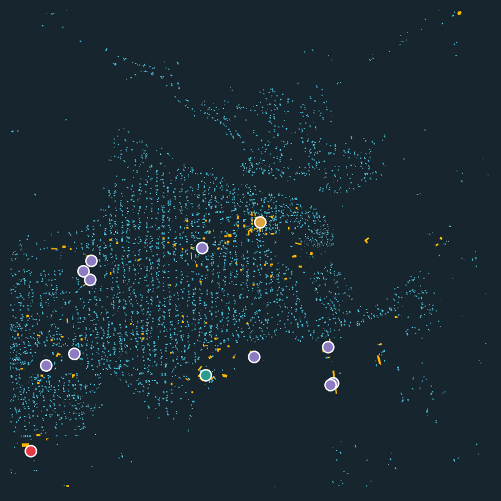
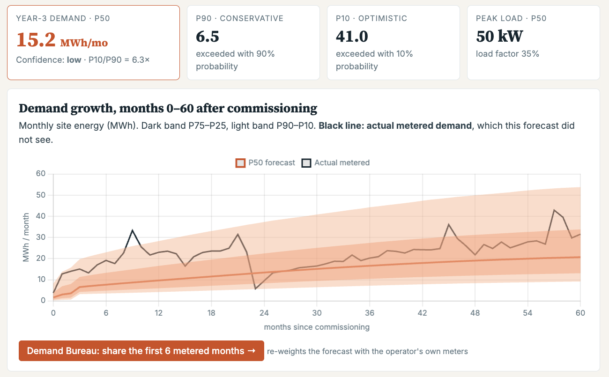

Global Energy Hackathon 2026 · Brief 03 · Digital Solutions & AI
What P90 did for solar finance,
Lodestar does for mini-grid demand.
Developers must size a mini-grid before a single meter exists. Today they guess, and lenders can't price a guess.
217,000mini-grids needed to serve 490 million people by 2030, $127B (ESMAP)
65%error of survey-based demand estimates per customer (CrossBoundary Innovation Lab)
12.5% → 6.1%IRR of a 30 kW site when oversized by 100% (CrossBoundary)
Noneof the open tools we found combine a demand range, a growth curve and a lender view, validated against meters
Who: mini-grid developers planning sites in unelectrified villages (Nigeria, Kenya, DRC first). Who pays: the lenders, DFIs and results-based-financing programmes that fund them. Who benefits: households and businesses that get a system sized to them, at a tariff they can afford, without evening brownouts.
The solution · built this weekend
Click a village. Get a bankable demand forecast.

Mutwanga (DRC): 11,400 open building footprints → ~3,800 potential households, 358 businesses; schools, clinic, market, mill from OpenStreetMap.

Year-3 demand 11.9 MWh/month (P90 5.3, P10 32.4), forecast from footprints and OpenStreetMap alone; it learns only from the other metered sites.
The black line is the site's real metered demand, which the model never saw.
Below in the report: driver waterfall, load profile, sizing options, IRR distribution and cash flow at P90/P50/P10.
Range, not a point: P90/P50/P10 from 20,000 Monte Carlo draws
Growth: connections × kWh per connection, months 0–60
Explained in plain words: what each forecast is built from, with every source dated and every driver tagged
Lender view: sizing, grant needed, debt safe on P90, memo, HOMER 8760
Business model · who pays, and how it pays for itself
A trust layer the sector can afford, and that improves as it's used.
Key partners
- Mini-grid operators: meter data via the Demand Bureau
- A neutral data steward (e.g. AMDA, which already benchmarks members)
- RBF programmes and rural electrification agencies (e.g. Nigeria REA / DARES)
- Open-data providers: building footprints, OpenStreetMap, NASA POWER, GridFinder
Proposed; none engaged yet.
Key activities
- Forecasts, lender reports, portfolio screens
- Quarterly re-calibration on Bureau data
- Public validation and scoring (ledger)
Value propositions
- Developers: a bankable P90/P50/P10 forecast and growth curve before building, no survey needed
- Lenders: debt sized on P90; stress test across 20,000 scenarios; one-click memo
- RBF programmes: screen hundreds of villages: mini-grid, solar home systems, or grid
- Communities: right-sized systems: −48% cost of power vs oversizing
- Validated on real meters; open data; explains itself
Customer relationships
- Free forecast → paid report (self-serve)
- Demand Bureau: give-to-get, like a credit bureau; site-month aggregates only, published when ≥3 sites from ≥2 operators pool
- Public track record builds trust
Customer segments
- 1 · Primary: developers bidding into RBF programmes (head most on fire, fast to reach; own the meters). AMDA members plan 6,116 sites
- 2 · Secondary: RBF programmes (largest budget; Nigeria's DARES targets 1,000+ mini-grids), reached via developers' reports
- 3 · Later: lenders and DFIs, once the ledger has a track record
- Beneficiaries, not payers: households and businesses
Scored on urgency, value, accessibility (team judgement).
Key resources
- Open-data pipeline + calibrated model
- Metered validation; forecast ledger
- Bureau data (grows with use)
Channels
- Web app + API, HOMER export
- USSD / SMS for field officers
- Industry bodies, RBF onboarding, DTECH 2027
Cost structure
Data and licences $0 · compute under 1 CPU-s per forecast (≈$0.00001, measured) · hosting ≈$300/yr · team ≈$60k/yr (two analyst-engineers, Nairobi or Lagos; assumption) · marginal cost per extra site ≈ 0, so cost per forecast falls with scale.
Revenue streams (proposed prices)
Free single-site forecasts · $300 Bankable Demand Report per site (0.05% of a $585k mini-grid) · $12k/yr portfolio screening for RBF programmes and DFIs. Break-even ≈ 200 reports/yr, or 3 subscriptions + 81 reports: 3.3% of AMDA members' pipeline.
| Buyer persona | Urgency | Value / ability to pay | Accessibility | Feeds Bureau | Score | Role |
|---|
| Project head at a developer bidding for RBF-funded sites | 5 | 3 | 4 | 5 | 12/15 | Primary: head most on fire, fast to reach |
| Programme manager of an RBF window (e.g. DARES) | 4 | 5 | 2 | 5 | 11/15 | Secondary: largest budget, slow procurement |
| Investment officer at a mini-grid debt fund / DFI | 3 | 4 | 2 | 2 | 9/15 | Later: after 12–18 months of scored forecasts |
6–18 months: M0–3 backtest 2–3 operators' meters under the Bureau protocol · M3–6 pre-register forecasts for 10 sites · M6–12 score them publicly; pilot with one RBF programme · M12–18 five countries, paid reports to lenders (DTECH 2027 MVP milestone).
Impact & scale · same real meters, turned into decisions
Right-sized, financeable, and reachable from any phone.
−72%capacity mismatch at year 3 vs a desk-estimate build, replaying real metered demand (155 → 44 kWp, two DRC sites)
+37% → +6%Mutwanga: desk build oversized; Lodestar's build-at-P50-then-expand plan was within 6%
−48%cost of power when sized on P50 instead of the optimistic P10 (avg. of 20 villages)
$0.20–0.40/kWh tariff needed by mini-grid candidates with a Nigeria-NEP-style $600/connection grant, vs ~$1 unsubsidised
Portfolio screener for RBF programmes
20 villages in 15 CPU-seconds: 1 bankable with an RBF grant, 4 need an anchor load, 12 are solar-home-system territory, 3 near the grid. Telling a programme where not to build is impact too. Nigeria's DARES alone targets 1,000+ mini-grids.
Built for the field, and for anywhere with rooftops
USSD + SMS: a forecast in one 160-character text on a feature phone. Offline pack: 12 KB, opens without internet. Footprints and OpenStreetMap cover all of Africa, South/Southeast Asia and Latin America; a new country needs only its regional benchmark.
Lodestar makes demand bankable, so the next 200,000 mini-grids get built at the right size.
Next: 2–3 operators for the M0–3 backtest, one RBF programme as pilot partner, a neutral host for the Demand Bureau.